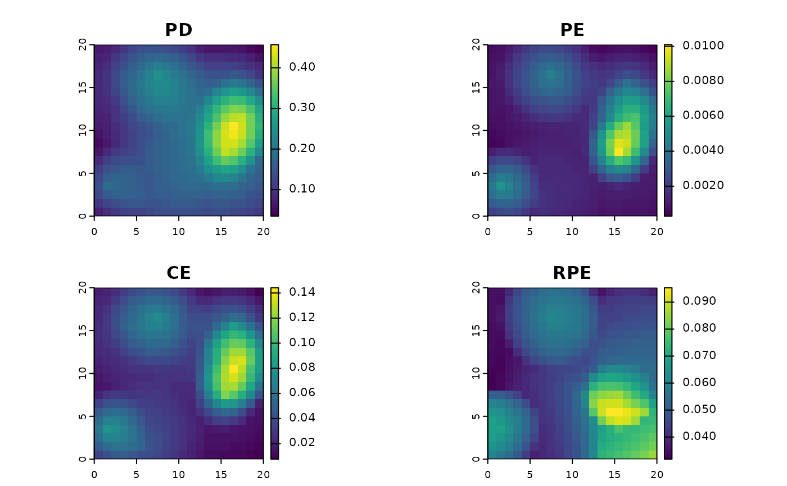

Calculate spatial phylogenetic diversity and endemism metrics
ps_diversity.RdThis function calculates a range of metrics including phylogenetic diversity and endemism, as well as diversity and endemism of terminals and of "clades" (all terminal and internal taxa in the tree, but not scaled by branch length). If continuous community data (probabilities or abundances) are provided, they are used in calculations, giving quantitative versions of the classic binary metrics.
Arguments
- ps
phylospatial object (created by
phylospatial()orps_simulate()).- spatial
Logical: should the function return a spatial object (TRUE, default) or a vector (FALSE).
Details
The function calculates the following metrics:
TR: Terminal richness, i.e. richness of terminal taxa (in many cases these are species)
CR: Clade richness, i.e. richness of taxa at all levels (equivalent to PD on a cladogram)
PD: Phylogenetic diversity
TE: Terminal endemism, i.e. total endemism-weighted diversity of terminal taxa (a.k.a. "weighted endemism")
CE: Clade endemism, i.e. total endemism-weighted diversity of taxa at all levels (equivalent to PE on a cladrogram)
PE: Phylogenetic endemism, i.e. endemism-weighted PD
Em: Mean endemism (equivalent to CE / CR)
RPD: Relative phylogenetic diversity, i.e. branch length of mean resident (equivalent to PD / CR)
PEm: Mean phylogenetic endemism, i.e. branch length / range size of mean resident (equivalent to PE / CR)
RPE: Relative phylogenetic endemism, i.e. mean endemism-weighted branch length (equivalent to PE / CE)
References
Faith, D. P. (1992). Conservation evaluation and phylogenetic diversity. Biological Conservation, 61(1), 1-10.
Kling, M. M., Mishler, B. D., Thornhill, A. H., Baldwin, B. G., & Ackerly, D. D. (2019). Facets of phylodiversity: evolutionary diversification, divergence and survival as conservation targets. Philosophical Transactions of the Royal Society B, 374(1763), 20170397.
Laffan, S. W., & Crisp, M. D. (2003). Assessing endemism at multiple spatial scales, with an example from the Australian vascular flora. Journal of Biogeography, 30(4), 511-520.
Mishler, B. D., Knerr, N., González-Orozco, C. E., Thornhill, A. H., Laffan, S. W., & Miller, J. T. (2014). Phylogenetic measures of biodiversity and neo-and paleo-endemism in Australian Acacia. Nature Communications, 5(1), 4473.
Rosauer, D. A. N., Laffan, S. W., Crisp, M. D., Donnellan, S. C., & Cook, L. G. (2009). Phylogenetic endemism: a new approach for identifying geographical concentrations of evolutionary history. Molecular Ecology, 18(19), 4061-4072.
Examples
div <- ps_diversity(ps_simulate())
terra::plot(div)
